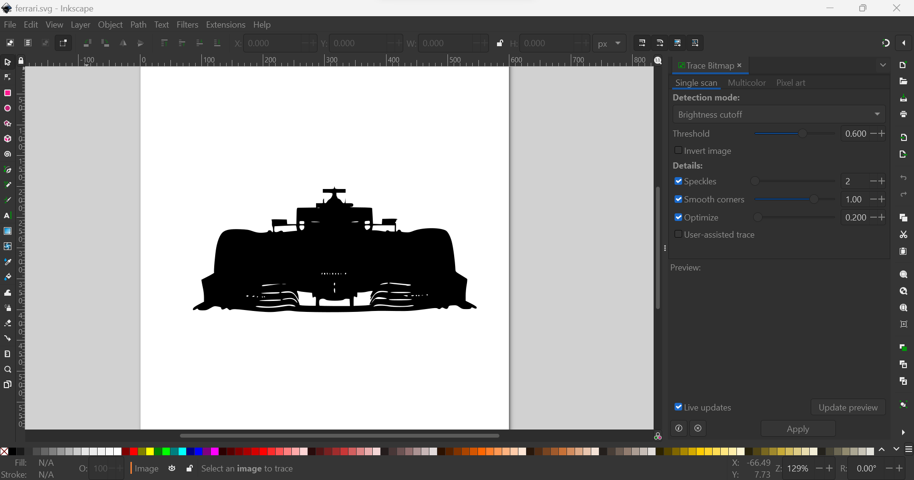
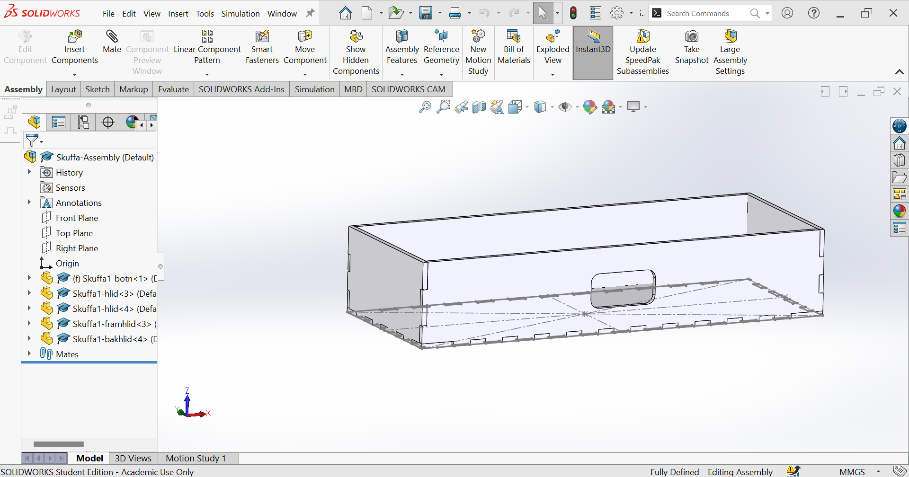

Computer-aided Cutting
This project is divided into two parts. Using the vinyl cutter and laser cutter.
Vinyl
I found a picture on Google of a Ferrari Formula 1 car that I put into Inkscape. By using Path>Bitmap Trace and changing the threshold to 0.600 I changed the picture to black.
Then I moved the picture to a computer that was connected to the vinyl cutter and from there I changed the picture to a pdf file. My teacher, Hafliði helped me with setting up the vinyl cutter by adjusting and tightening the wheels so that the vinyl would stay still. Finally, everything was ready and it was time to cut. This was the final result.
Kerf test
To determine how much kerf the laser cutter should have, we had to test it. I did the test with Aron Beck and Tómas Ingi. In order to determine the kerf, we cut ten boxes and measured the length of the boxes and then the hole in the plastic from which the boxes were cut.
The length of the hole was 9.9mm and the combined length of the boxes was 9.69mm. Then we got that our system is (9.9-9.69)/11=0.19mm but I rounded it to 0.20mm.

CAD design
The program I chose to use was Solidworks. I decided to laser cut an office drawer for my small tools. I started by measuring the longest tool, which is my dial gauge, and used that as a basis for how big the drawer should be. I ended up making it 250mm long, 100mm wide, and 50mm high and then offset all sides with the kerf, 0.20mm.
Parametric Design
To make a parametric design I used a design table in SolidWorks.
I started by opening the tab configuration. There is one configuration in the file named “Default”. From there I inserted a design table by going into Insert>Tables>Excel Design Table and using "auto-create". Then I could choose a dimension of a line in the sketch and make a couple of variants.
It is pretty useful to use the parametric design table if I want to increase the volume of the drawer but for now, I will stick with the base design.
Inkscape
After I finished drawing all the sides of the drawer, I converted them to a .dxf file and transferred them to Inkscape. Then I changed the line thickness to 0.02 and changed the paper size to 500mmx500mm by going to File => Document Properties.

Lazer cutting
The material I chose was 3mmx500mmx500mm black acrylic plastic. In the laser cutter itself, I had to place the drawing from Inkscape. So in the settings, I set autofocus and 20% speed, 100% power, 100% frequency, and 3mm thickness. After that, I had to open the vacuum valve and press the play button.
Post Production Mess
After the laser cutting, I found that in some places I could not put the drawer together, mainly on the front and back. Then my teacher pointed out that the kerf was supposed to be 0.2mm, not 0.02mm. Then I found out after looking in Solidworks that I made a mistake which fixed my original mistake with the kerf where I made it 0.2mm, the correct amount, but in some places, it was still 0.02mm. I could have avoided this headache by experimenting with the laser cutter I have in mind for the future. But this was easily fixed by filing the sides down a bit.
Results
Here are the results.

And here are the cad files.
| Project Section | Description | Time |
|---|---|---|
| Vinyl | Find picture, adjust in inkscape and print. | 1 hour. |
| Kerf test | Find length of kerf | 0.5 hours. |
| 3D design | Design and drawing | 6 hours. |
| Parameter | Adding parameter to the design | 2 hours. |
| Lazer cutting | Setting up in inkscape and lazer cutting | 1 hour. |
| Documentation | Documentation on website | 5 hours. |
| 13.5 hours. |